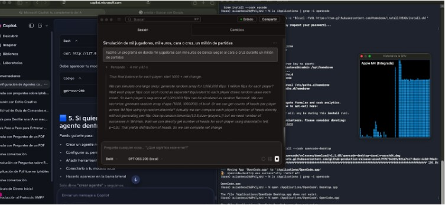
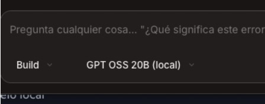
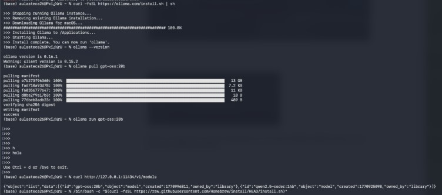
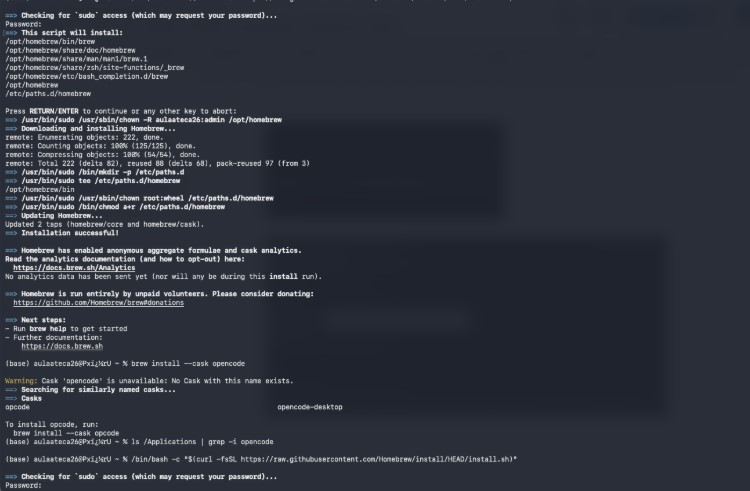
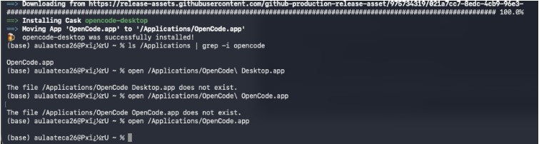
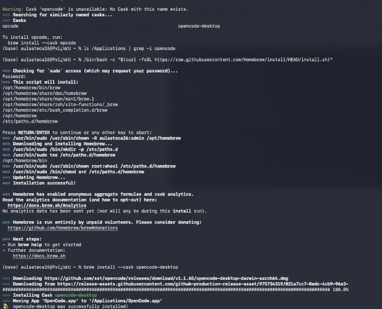

Esta captura muestra la interfaz principal de Microsoft Copilot donde aparece el botón o menú para "Crear un agente". Se ve el chat lateral y las opciones de configuración en la barra superior. Aquí es donde das el primer paso diciendo "crear agente".
En esta pantalla configuras la personalidad del agente. Puedes definir su nombre, tono de voz (amigable, técnico, creativo), conocimientos específicos y comportamiento. La captura muestra los campos de texto para descripción y personalidad.
Muestra la sección donde seleccionas herramientas que tendrá el agente (web search, calculadora, APIs específicas, etc.). La captura incluye la lista desplegable de herramientas disponibles y el botón "Añadir herramienta".
Esta captura clave muestra la configuración para conectar el agente a tu modelo local (Ollama + GPT-OSS-20B). Se ve la URL http://127.0.0.1:11434 y la selección del modelo local desde el menú desplegable.
Pantalla de ajustes avanzados del agente: límites de uso, contexto de memoria, permisos de acceso, y opciones de privacidad. Aquí defines si el agente puede acceder a archivos locales o solo responder preguntas.
Captura final mostrando el agente ya creado y funcionando en la barra lateral de Copilot. Se ve el icono del agente, su nombre, estado "Online" y la primera conversación de prueba.
